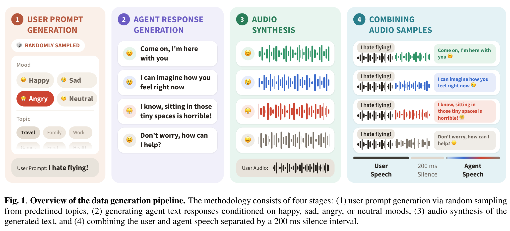

EmotionPlex: Lightweight Emotion Control for Full-Duplex Spoken Dialogue Models
1Concordia University · 2Mila – Quebec AI Institute · 3MAGO · *Equal contribution
Abstract
Emotion control for real-time conversation
Recent research has increasingly focused on real-time speech models capable of full-duplex communication. However, reliable and controllable emotional expression remains challenging. While text prompts can influence what a model says, they offer limited control over how it expresses it. We introduce a lightweight fine-tuning strategy for full-duplex spoken dialogue models that enables explicit control over four emotions (happy, angry, sad, and neutral) using simple keyword conditioning. By training on synthetic dialogues that pair identical user inputs with varied emotional responses, this approach enables the model to map explicit emotion prompts to distinct acoustic patterns. Applied to PersonaPlex, a streaming full-duplex baseline, our approach adds no inference-time overhead and significantly improves text and audio emotional control on our proposed affective extension of AEQ-Bench, maintaining real-time interaction to 280 ms turn-taking latency.
Overview
Control emotion without changing the architecture
Text prompts can guide what a spoken dialogue model says, but provide limited control over how it sounds. EmotionPlex fine-tunes PersonaPlex-7B with emotion-anchored synthetic dialogues, teaching the model to connect simple emotion instructions with both lexical choices and acoustic prosody.

Audio demo
Emotion Bench model comparison
Select an input and compare how each model responds when instructed to speak with a happy, sad, angry, or neutral tone.